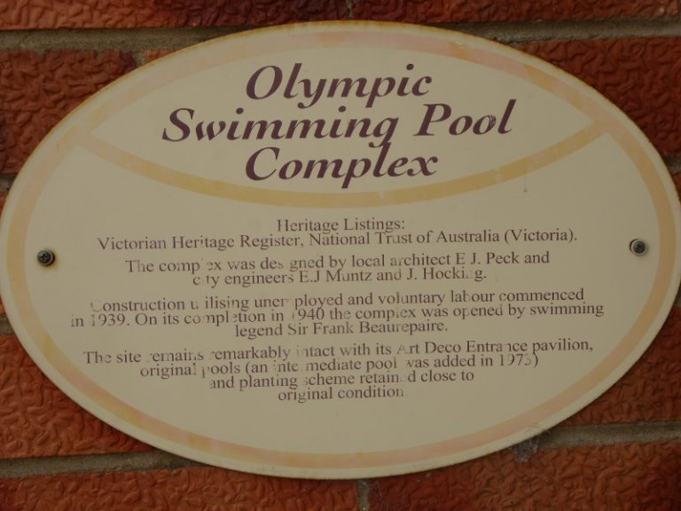
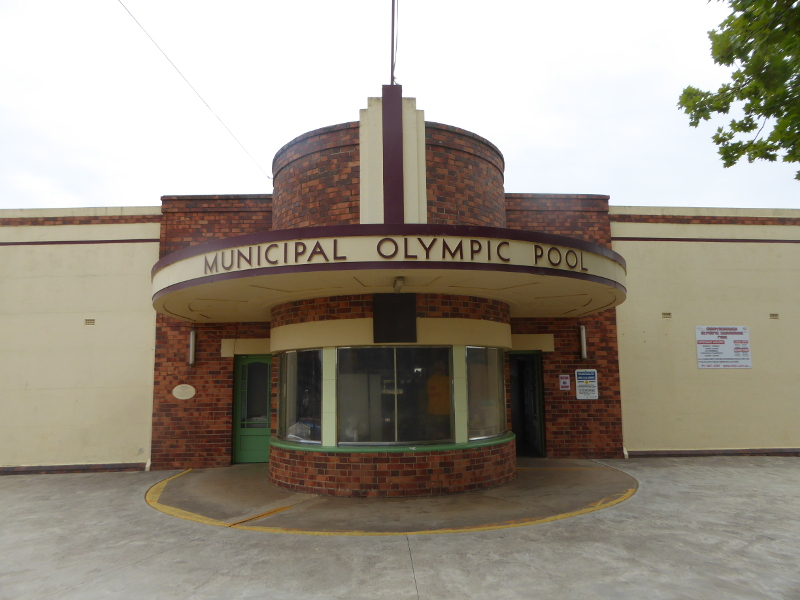
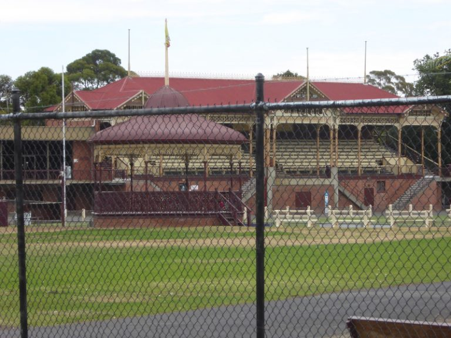
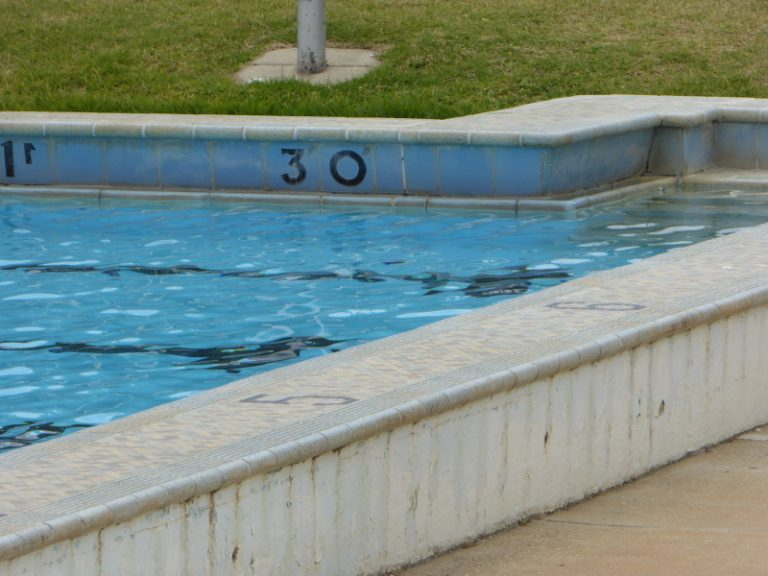
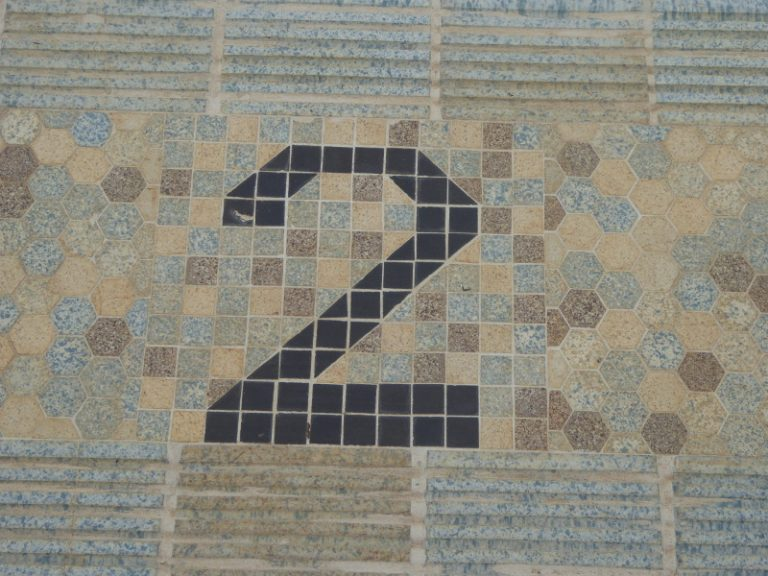
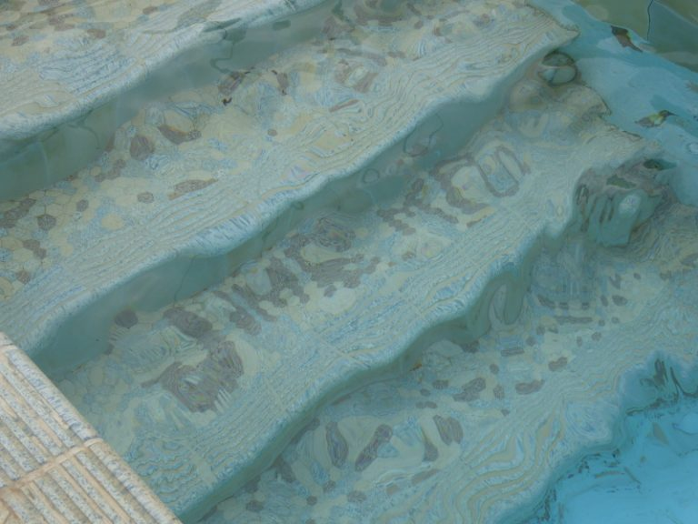

|
||||
|
|
||||
ReferencesThe fight for heritage listingA few years ago, ADS and Maryborough residents, led by Lauris Weir, fought a major battle to preserve Victoria’s best Art Deco swimming pool. The subsequent listing by Heritage Victoria resulted in funds being made available to the local council for restoration works, which have commenced and are being monitored closely by our ‘eyes and ears’ in Maryborough, the indefatigable Lauris. History and stories about unique pool
Maryborough’s Olympic Pool was opened in December 1940 in the depths of the second world
war. The Mayor of Melbourne came up to Maryborough to open the facility.  The Mayor congratulated Maryborough for its water filtration and treatment system. He said he wished the Health Department would close swimming baths that didn’t have such systems to prevent risks of epidemics. And the existence of a proper pool in town meant that young people in town wouldn’t need to swim in local creeks, some even going as far as Creswick for a dip. The local member of parliament said Maryborough’s pool would be ‘the envy of all country pools throughout Australia’. The 1941 annual report of the Victorian Swimming Association said: "it is confidently anticipated that within a period of two years the delightful appearance of this pool will be a source of inspiration to all municipalities throughout Victoria". A 1943 discussion in Horsham town council condemned the poor levels of swimming ability in the town and some councillors spoke highly of Maryborough’s pool, stating that while only 4 per cent of kids in Horsham could swim, in Maryborough 95% of children swam, because of the pool. They also said that 1600 people had paid to swim in the pool on one hot Sunday (not counting season ticket holders). All the coverage of the pool’s opening in 1940 spoke of the ‘modern’ facilities at the pool, with predictions that Maryborough would thereby produce some champion swimmers before too long… The pool hosted the Victorian Country Championships several times in the 1940s and 50s, and sure enough, one Jack McGrath a local copper in Maryborough won the 220yards state swimming title in March 1945 – he had trained at the Maryborough pool, which he considered ‘the best country pool in Victoria’. The Weekly Times had a photo of the Maryborough Olympic Pool in 1950. It looked remarkably the same as the pool in 2019. We just seem to be missing the ‘weeping elms’ which were reportedly by the pool in those early days. The children’s pool is still there but we have also lost the two diving boards, as we have in most modern-day outdoor pools, sadly. The Argus in Melbourne wrote about Maryborough’s Princes Park in 1954. The ‘modern’ Olympic pool certainly got a mention, but I loved the fact that paddle steamers used to ride the lake next to the pool in earlier years. No sign of those these days. Sadly, even on a reasonably warm summer Sunday in December, there was nobody playing tennis on the ten courts near the pool, either. Australian tennis has gone downhill since those heady 1950s days when courts like these would be ‘used every summer weekend, and are favoured by many players from both city and country’, said The Argus. Unique features
Maryborough Olympic Pool has retained its art deco entrance; some of the changing
rooms look as if they won’t have changed much from the early days, and the pool itself
is just a simple Olympic length, with a very deep end, where once there would have been
a diving board, but other than that no high-falutin facilities to make it into a 21st
century aquatic centre. 
It’s a great spot for a swim, though. Set in the lovely park area, with a vintage
grandstand and vintage badnstand across the oval in view from the pool edge. 
The tiling around this vintage swimming pool is beautiful, with old depth sizes in feet and inches.  
And there are some intriguing names in tiles built into the steps into the pool at the
shallow end. I discovered after our swim that these were made by the pool builders to
leave their personal mark on the pool for future generations.  |
||||
|
|
{kind=link}
{kind=link}
{kind=link}
{kind=link}
{kind=link}
{kind=link}